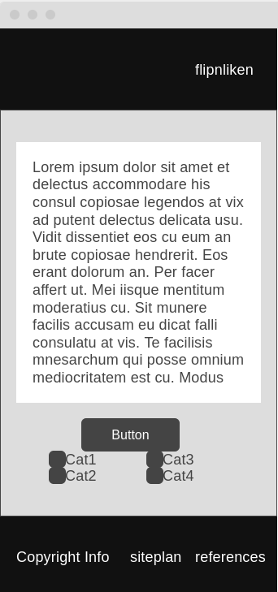
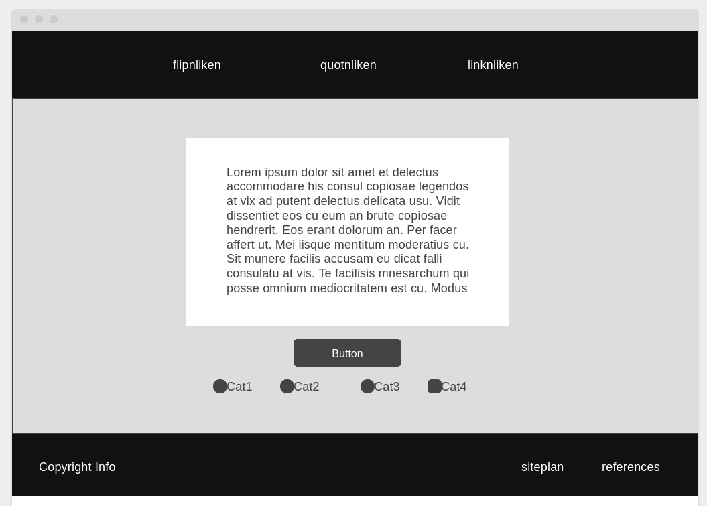

Sitename - flipnliken.com
I chose this name based on a comment I read many years ago on reddit. The beginnings of this page are over 5 years old, though there will be significant updates to fulfill all the requirements of the project. The purpose of the site is to provide quotes and scripture verses based on the user's desire. It started with random verses from a selected book of scripture, but new pages will provide quotes based on the need of the user.
Site purpose
The purpose of the site is to provide a place that a person can go to receive personal edification and motivation. My initial thought was to build a site where I could click a button and get a random motivational quote. The page should be something that says, "Get back to work!" If you are familiar with the "just do it" video from Shia LaBeouf, something like that. There will be 3 pages per the requirements: quotnliken (quotes), flipnliken (scripture), and linknliken.
Site scenarios
- Can I add Latter-day scriptures? (for LDS folk)
- Can I limit my search to the Bible? (for non-LDS folk)
- I am feeling unmotivated, can I find a quote to motivate me here?
Color Scheme
I like things very simple. All of my previous work has been black and white, and I will be sticking with it here. I will be using #222 for my "black" and whitesmoke for my "white". That "whitesmoke" very-light gray will be my background (as on previous projects) and I will use a plain white for the background of the quote/scripture/link boxes/cards. the #222 dark dark gray will be for text.
Typography
I have selected the Ubuntu font. It is one of the fonts I used for all other projects so far and I like it. Ubuntu is sans serif and comes off as relatively casual, which I want for the page. I will use Ubuntu for the quotes, navigation, titles, and scriptures.
Wireframes

